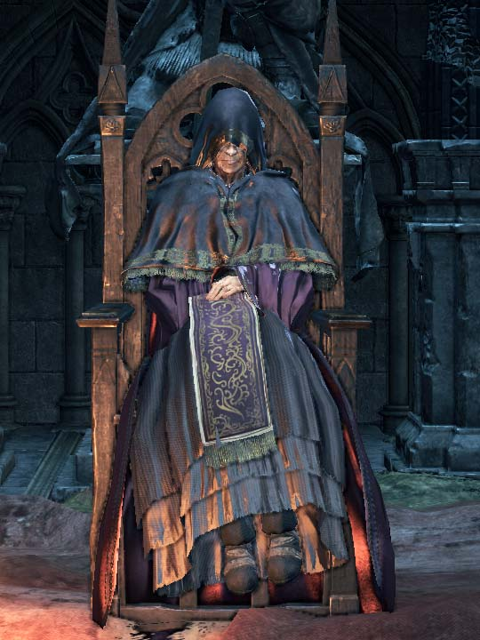

← Volver
← Volver
Emma (también conocida como Emma, Suma Sacerdotisa del Castillo de Lothric) es un NPC en Dark Souls III.
¿Dónde se puede encontrar a Emma, Suma Sacerdotisa del Castillo de Lothric en Dark Souls III? Puedes encontrar a Emma dentro de la catedral que se encuentra del lado opuesto a la arena de batalla de Vordt del Valle Boreal en el Gran Muro de Lothric.
| Emma Suma Sacerdotisa lista de objetos disponibles | Cantidad | Probabilidades | Suerte |
|---|---|---|---|
| Pequeño Estandarte de Lothric | 1 | 10% | No |
| Camino Azul | 1 | 10% | No |
| Cuenca de los Votos | 1 | 10% | No |
Diálogo del primer encuentro
"¡Ah, la espera ha sido larga, No Encendido! Soy Emma, Suma Sacerdotisa del Castillo de Lothric. Permíteme hablarte con franqueza. No encontrarás a los Señores de Ceniza aquí. Se han ido. A sus hogares agitados, que convergen en la base de este castillo. Dirígete a la base del Muro Alto. Cruza la gran puerta e iza este estandarte para continuar. (Entrega un Estandarte Pequeño de Lothric)"
"Este regalo de despedida es para ti. Es la insignia de un antiguo pacto. Si temes a los intrusos, espíritus oscuros atraídos por las brasas, graba esto en tu corazón. Y la antigua concordia llamará a los nobles Centinelas Azules para cazar a estos espíritus malignos. (Cede el Camino del Azul)"
Al seleccionar "hablar" antes de que Vordt sea derrotado
"No Encendido. Dirígete a la base del Muro Alto. Cruza la gran puerta e iza el estandarte para continuar. Pero ten cuidado. El perro vigila todo de cerca. El vil perro guardián del Valle Boreal."
Al seleccionar "hablar" luego de derrotar a Vordt
"¿Qué ocurre, Apagado? ¿No eres un Buscador de Señores? Dirígete a la base del Muro Alto y busca a los Señores de la Ceniza. ¿No es esta la vocación de tu especie, desde tiempos inmemoriales?"
Después de haber derrotado al último de los 3 Señores de Ceniza antes del Príncipe Lothric
"Ahhh, Apagado. El fuego se apaga y espera a su último Señor. El príncipe Lothric está en tus manos... Por favor, salva su alma."
Cuando se le habla mientras está postrada
"El príncipe Lothric está en tus manos. Por favor, salva su alma. Dile lo que debe ser... un Señor."
Al atacarla y matarla
"¿Qué demonios? —¿De qué se trata esto? —Un señor, debe ser... Mi querido príncipe... Lothric..."

 ↑
↑